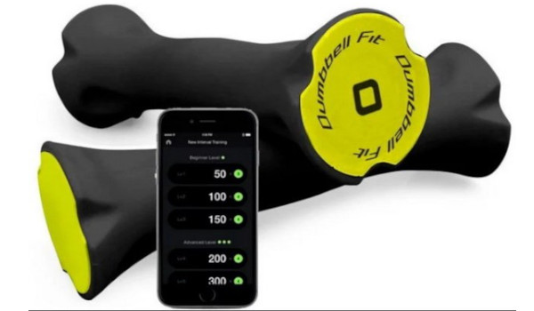
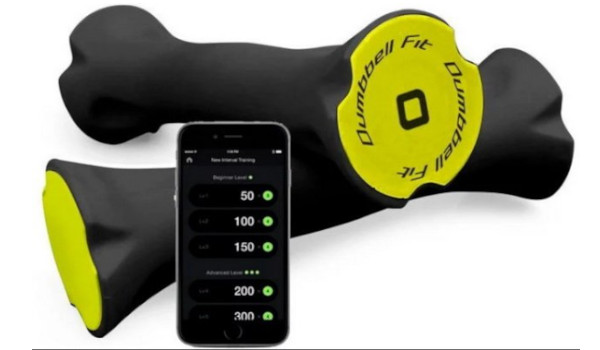
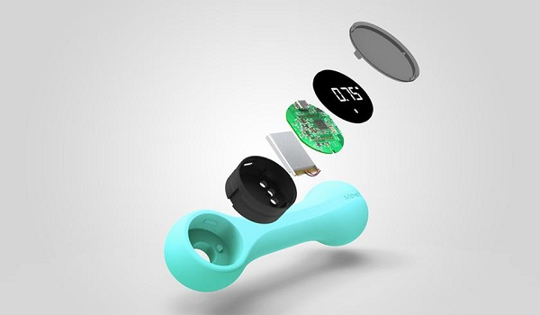
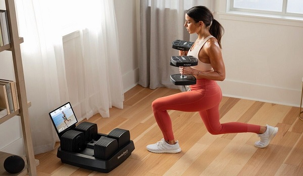

Умные гантели помогают поддерживать мышцы в тонусе, обеспечивают тело зарядом энергии на весь день. Для тренировок понадобится всего лишь десять минут в день. За счет своей компактности и мобильности гантели можно носить с собой и тренироваться, когда вам будет удобно.
Устройство имеет минималистичный дизайн. Благодаря наличию приложения для смартфона есть возможность отслеживать вашу активность в течение дня, устанавливать цели и мотивировать себя ежедневно. Программа насчитывает более тридцати танцевальных тренировок, вы сможете двигаться в свое удовольствие, при этом приводя тело в желаемую форму.
Благодаря приложению можно отслеживать интенсивность тренировок и сравнивать свой прогресс в течение месяца. Умные сенсоры помогают определить уровень вашей физической подготовки, подстраиваются под ваши возможности и желаемый результат. Таким образом, датчики точно укажут желательное время тренировки, чтобы вы смогли максимально быстро достигнуть своей цели.
Вы с легкостью можете подключить ваше мобильное устройство к телевизору и наблюдать за тренировкой на большом экране. Батарея устройства отличается емкостью, вы сможете использовать гаджет в течение 300 минут после тридцатиминутного заряда. Гантели выглядят элегантно, современно, прекрасно впишутся в современный ритм жизни Особенности конструкции: встроенный дисплей Габариты: 58 × 190 мм Питание: встроенный аккумулятор.
Танцы - интенсивная кардионагрузка на весь организм. Вы научитесь не только хореографии, но и будете терять вес во время подобных тренировок. Похудение во время развлечений Упражнения во время танцев — это эффективный комплекс упражнений для всего тела. В сочетании с тренировками с гантелями, поможет тренировать мышцы, уничтожая калории тела. Похудение осуществляется во время занятий танцами и играми, Вы получите такое же удовольствие, как во время компьютерных игр.
 

 